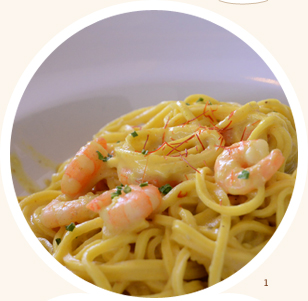

1. とにかくしょっぱくてボリューミーなリンツの食事。そんな中でも量・塩加減ともにわりとマトモで高得点だったのがこれ。シュリンプのTAGLIOLINIです。レントス美術館のカフェバー(1F)にて、10.9ユーロ。 2. アルスエレクトロニカセンター3階カフェのサンドイッチ。塩加減は平常、サイズはやや大きめです。 3. 「Akakiko」という日本食屋のお寿司とおみそしる(樽入り)。酢飯はレモン風味。
1. 自転車がとても優遇されている街、リンツ。信号機には歩行者用と自転車用があるのがデフォルト。 2. 自転車でここからどこそこまで何キロ、という標識が街のいたるところにあります。日本ではなかなかお目にかかれないですね。 3. 街中には自転車専用道路が張り巡らされています。専用道路のおかげで、歩行者の背後でヨタヨタすることなくすいすいと駆け巡ることができます。
1. 団地に立っていた標識。「子どもの飛び出しに注意」といったところでしょうか。でもそうすると右にある家は不要な気もします... 2. 街で時々見かけた、少し離れて立つ男女の標識。何を表しているのでしょう。とても難しいです。 3. 変わってこちらはとてもわかりやすいですね。ホテルです。ふくよかな人がベッドに気持ち良さそうに納まっています。大通りにあった標識です。

1. オーストリア大手のスーパー、「EUROSPAR」。一度入ったらレジを通らないと店外に出られない仕様です。無理に入口から出ようとするとブザーが鳴り響いて恥ずかしいことに。財布を忘れたら大変。野菜や果物が安いです。 2. チーズの充実度が高いです。チーズも日本に比べてかなり安い。 3. 店内のバーカウンターでワインとお喋りに興じる老男女。
1. ロゴがかっこいい看板。何の施設なのか、建物の外観からは不明でしたが、google翻訳によると「幼稚園の先生のための連邦研修所」とのこと。原色に納得です。 2. タバコ屋さんの看板です。たいへんわかりやすいですね。リンツでは喫煙者に寛容なようで、街のあちこちに灰皿が設置されていました。 3. こちらは今回利用したレンタサイクル屋さん、その名もDonau。川面に揺らめくデザインです。
1. リンツの街中にはいたるところにごみ箱が設置されています。ごみをぺろんと捨てているかんじが和みますね。 2. よく見かけたのは1.のオレンジ色のと、銀色のスマートなタイプ。 3. 銀色タイプは傾けると中のケースをガコンと取り外せるようになっています。日曜の昼間に、右手脚にがっちりと刺青の入った作業員のおじさんが回収していくところをキャッチしました。